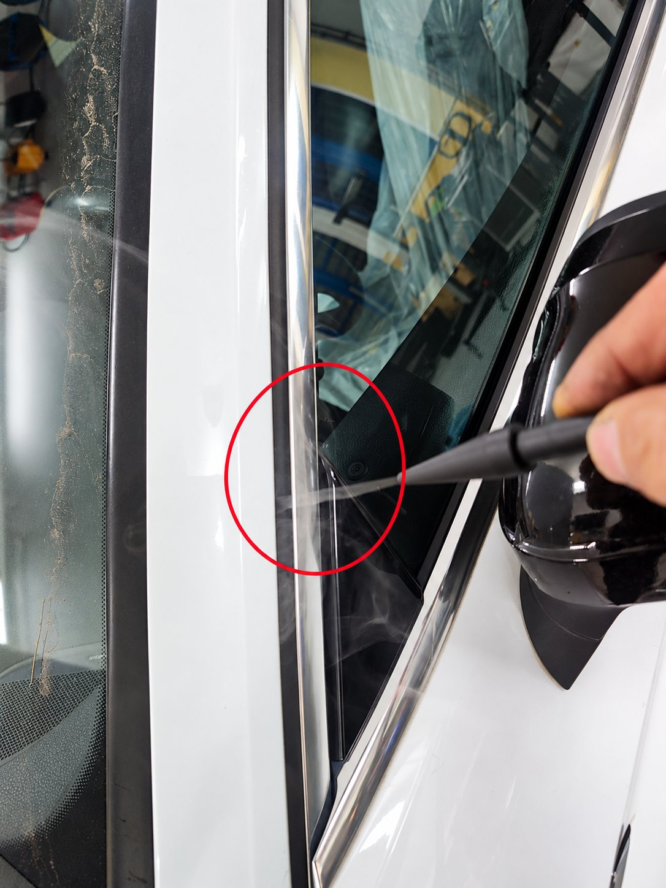
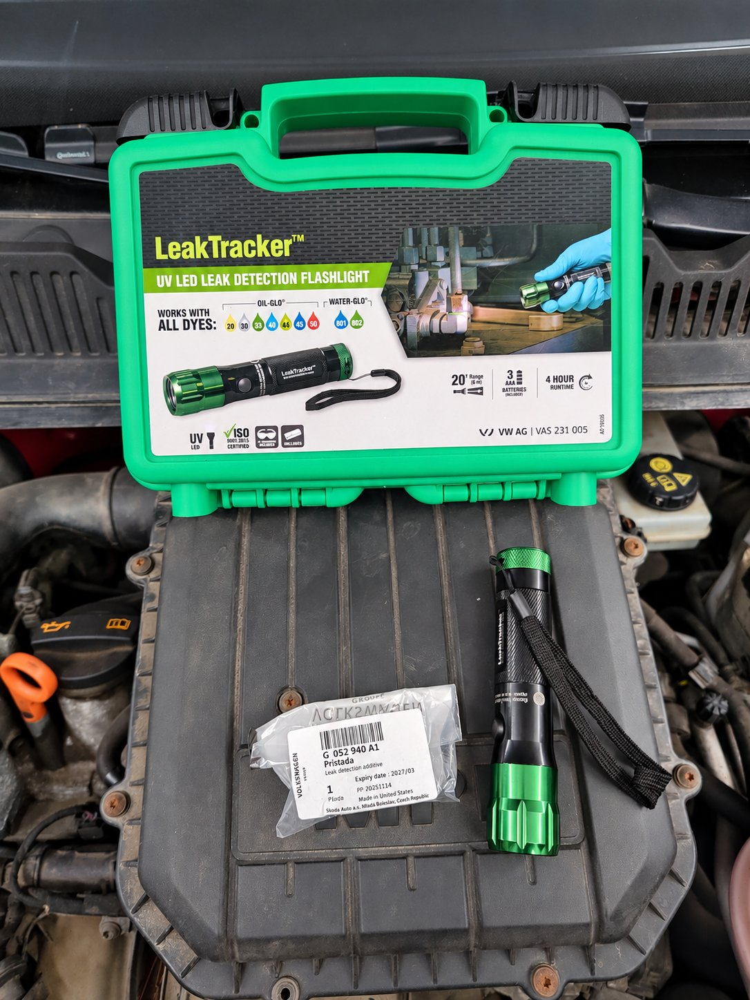

Specialist diagnostics

When searching for the cause of a fault, it is important to connect the vehicle's symptoms with the results of specific measurements. In specialised diagnostics, we use targeted tests that help decide on the next repair procedure. We choose the scope of the inspection according to the vehicle construction and the described problems.
Methods according to the checks required
The introductory graphic and text within the original photographs are retained in their original language. The measurement report PDF is in English.
Borescope inspection
Borescope inspection of engines and hard-to-reach components
Borescope inspection allows us to examine internal spaces and components that cannot be seen during a normal visual inspection. We use a camera system with 360° control of the probe's viewing direction. Depending on the vehicle design, this can reduce the dismantling needed for an initial assessment of a fault.


What can be checked with an endoscope?
- Accessible areas of combustion chambers, piston crowns and cylinder walls.
- Visible deposits and traces of mechanical damage.
- Accessible parts of the intake and exhaust system.
- The internal structure of the catalytic converter or particulate filter, if the design of the particular vehicle allows the insertion of the probe and the necessary view.
- Other difficult-to-access places depending on the nature of the fault.
The scope of the inspection always depends on the design of the particular engine or component, the available access holes and the possibility of safe guidance of the probe.
How do we evaluate the finding?
We assess the endoscopic image in connection with the manifestations of the defect and the results of other diagnostic tests. It helps us determine the next course of action and decide if a more detailed inspection or disassembly is needed.
Borescope inspection shows the condition of visible surfaces. The image alone does not establish combustion chamber leak-tightness or the operating efficiency of a catalytic converter or particulate filter. Depending on the findings, we therefore carry out further measurements.
Benefit for the customer
A targeted visual inspection provides a concrete basis for explaining the finding and proposing a repair. In cases where the inspected location is accessible by a probe, it can help reduce unnecessary component disassembly.
Microscopic inspection of vehicle fluids
We assess the presence and appearance of solid particles and impurities by microscopic inspection of operating fluid samples. We evaluate the finding in connection with the type of liquid, the place of sampling and the symptoms of the defect. The inspection serves as an additional basis for further diagnostic procedures.
Example from practice: checking the used engine oil from the 1.4 TSI engine

The photo shows the inspection of a sample of used engine oil using a digital imaging microscope. We monitor the appearance and representation of observed solid particles and impurities.
We assess the finding together with the operational difficulties of the vehicle and the results of other checks. The presence of particles alone is not enough to clearly determine the cause of the defect.
A microscopic image alone cannot reliably identify the chemical composition or exact origin of particles. Microscopic inspection does not replace laboratory fluid analysis.
CO₂ measurement
Testing for combustion gases entering the cooling system
We use the AVL DiTEST VAS 531 009 device for checking. It measures the carbon dioxide content (CO₂) in the expansion tank of the cooling system and simultaneously records the pressure curve. An increased content of CO₂ may indicate the penetration of combustion gases into the cooling circuit.

When is measurement appropriate?
When looking for the cause of repeated coolant loss, abnormal pressurization or engine overheating, the CO₂ measurement can be part of the diagnostic procedure. However, these manifestations alone do not confirm the penetration of combustion gases. We assess the suitability of the test based on the specific vehicle and the results of the previous inspection.
How the check is done
We connect the device to the expansion tank via the appropriate adapter. During the test, we monitor the values of CO₂ and pressure over time. We adapt the measurement procedure and conditions to the instructions of the vehicle and device manufacturer. The output of the measuring program is a report with measured values and a graph.
The device allows checks on both cold and warm engines. We select the specific test conditions according to the prescribed procedure and the circumstances in which the fault occurs.

How we evaluate the result
The measurement supports further diagnosis but does not identify a specific faulty component on its own. An elevated CO₂ level does not automatically mean that the cylinder head gasket has failed. Depending on the engine design, the leak may also be associated with the exhaust gas recirculation (EGR) system. We therefore assess the results alongside other checks to target the repair at the established cause. A result without elevated CO₂ likewise does not confirm that the entire cooling system is fault-free.
Example measurement report
The attached report for a Volkswagen Multivan test was assessed as OK by the software. This is the result of one measurement under the conditions of that test, not general confirmation that the vehicle or the entire cooling system is fault-free.

Smoke leak testing
Smoke testing – targeted leak detection
Leaks in individual vehicle systems can cause operational problems, engine malfunctions or unpleasant whistling and aerodynamic noise while driving. Using the Bosch SMT 300 smoke tester, we search for leaks that may not be visible during a normal visual inspection.


What do we check?
- Intake system – leaks in pipes, hoses, joints and seals that can allow unmetered air to enter.
- Vacuum system – leaks of vacuum lines and connected components according to the vehicle design.
- Exhaust system - leaks in joints, seals and other accessible parts of the exhaust system.
- Fuel Tank Vent and Fuel Vapor Capture System (EVAP) - Lines, connections and system component leaks.
- Sealing of windows, doors and other openings of the body - places of unwanted air flow that can be related to whistling, drafts or increased aerodynamic noise in the cabin.
How does the inspection work?
For suitable closed systems, we introduce diagnostic smoke into the circuit under test and monitor whether it escapes outside it. A visible leak helps to locate the leak and target the subsequent repair to a specific location.


When checking body seals, we observe changes in the flow of smoke in the vicinity of windows, doors and sealing joints. This can reveal the passage of air, which can be the cause of noise while driving.
We choose the connection method and the test conditions according to the specific vehicle, the inspected system and the manufacturer's instructions. We use a prescribed test medium and procedure for the fuel vapor system.
How do we evaluate the result?
We assess the finding together with the symptoms of the defect and the results of other checks. A smoke test helps determine the location of the leak; we verify its influence on the function of the vehicle or the noise in the cabin with follow-up diagnostics or a test drive.
Benefit for the customer
More accurate location of the leak helps to reduce unnecessary disassembly and replacement of components without a proven cause. The result provides a comprehensible basis for explaining the defect and proposing the next repair procedure.
UV leak detection
Finding oil and coolant leaks using UV diagnostics
Small leaks may only manifest as gradual seepage. In addition, the leaking liquid can spread over the surface of the components, so the visible contamination may not correspond to the actual location of the leak. UV diagnostics help to locate this source more precisely.


Check for engine oil leaks
To locate engine leaks, we use fluorescent additive G 052 940 A1 and a VAS 231 005 UV lamp. The additive mixes with the engine oil, allowing us to trace the location and path of a leak under UV light.
A more pronounced leak may already be visible when the engine is running in the workshop. For minor leaks, it may be necessary to drive the vehicle first. If its technical condition allows, the customer continues to use the vehicle after applying the additive and then returns for the agreed inspection. Using a UV lamp, we then examine the suspicious areas and evaluate the resulting traces.
Using the additive does not necessarily require an additional engine oil change. We always follow the relevant manufacturer instructions and take account of the technical condition of the specific vehicle.
Check for coolant leaks
The same UV lamp can also be used when searching for coolant leaks. For this check, a separate fluorescent additive designed for cooling systems is used, the suitability of which must be verified for the specific coolant and vehicle.
Under the UV light, you can then look for traces of leakage, for example, around the hose connections, radiator, water pump and other accessible parts of the cooling circuit. The G 052 940 A1 additive listed above is intended for detecting engine oil leaks.
Targeted evidence for planning a repair
We evaluate the finding in connection with the manifestations of the defect and the results of further checks. Locating the actual source of the leak helps determine the scope of the repair and limit unnecessary disassembly or replacement of components without a proven cause.
Book an inspection
When booking, please describe the conditions under which the problem occurs and whether the cooling system or engine has recently been serviced. Based on this information, we will propose a suitable scope of diagnostic work.